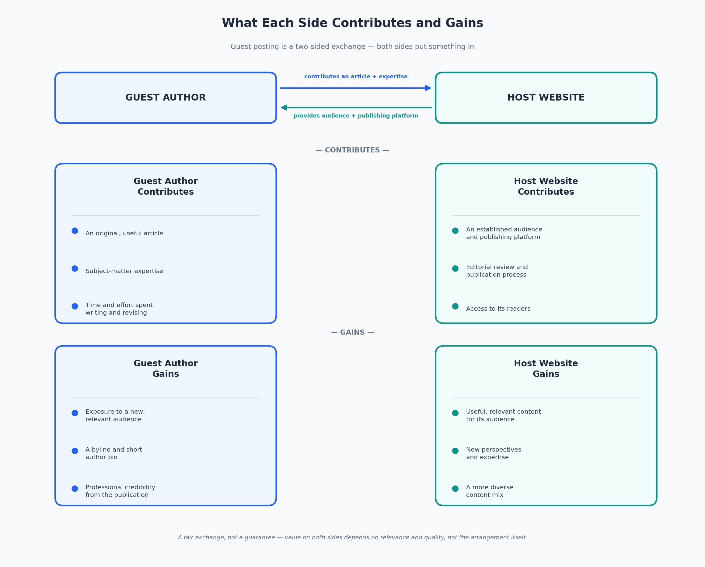
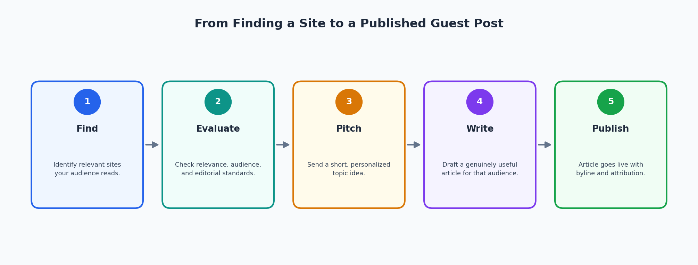
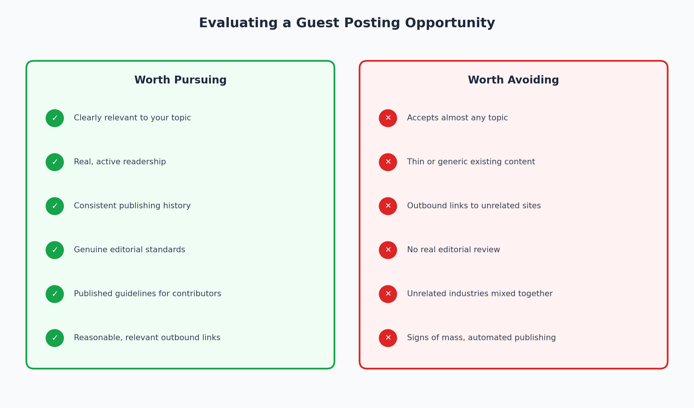

What Is Guest Posting? A Complete Guide
If you've come across the term "guest posting" and aren't quite sure what it involves, the short version is this: it's the practice of writing an article for someone else's website or publication, usually with your name attached as the author. That's the whole concept at its core. Everything else -- the strategy, the outreach, the SEO discussion that tends to surround it -- builds on top of that simple idea.
This guide walks through what guest posting actually is, why people do it, how the process works in practice, and how it connects to search engine optimization without overstating what it can deliver. It also covers something a lot of beginner explanations skip over: how to tell a genuinely worthwhile guest posting opportunity from a site that exists mainly to sell space to anyone willing to write for it. By the end, you should have a realistic, practical understanding of guest posting -- not just the definition, but how to approach it well.
What Is Guest Posting, Exactly?
A guest blog post is an article you contribute to a website you don't own or run. The person writing the article is usually called the guest author or guest contributor. The website publishing it is the host, or sometimes just "the publication," especially when it's a media outlet, industry blog, or trade site with an editorial process.
The arrangement works because both sides are getting something out of it, even though what each side gets tends to be different.
The host website gets content. Running a website -- especially one that publishes regularly -- takes a steady supply of material, and guest contributions can bring in perspectives, expertise, or writing bandwidth that the site's own team doesn't have. A well-chosen guest post can also introduce the host's audience to a new voice, which keeps things from feeling repetitive if the same handful of writers cover everything.
The guest author gets exposure to an audience they didn't already have. Most guest posts include a short author bio, and many include a byline link back to the author's own website or professional profile. Beyond that, being published somewhere with an established readership can lend a degree of credibility -- showing that an editor or publication thought the work was worth running.
Here's a simple example. Say a small accounting firm's owner writes an article about a common tax mistake freelancers make, and a freelancer-focused blog agrees to publish it. The blog's readers get useful, practical advice from someone who deals with this exact problem regularly. The accounting firm's owner gets their name and expertise in front of exactly the kind of person who might need an accountant someday. Neither side is doing the other a favor, exactly -- it's a fair trade, assuming the article is actually good.
That last part matters more than it might seem. Guest posting only works as described when the article is genuinely useful to the host's readers. An article written mainly to get a link placed somewhere, with the readers as an afterthought, tends to fall apart under scrutiny -- from editors, from readers, and increasingly from search engines, which is a topic worth its own section below.

Why Do Businesses and Writers Use Guest Posting?
People pursue guest posting for a handful of overlapping reasons, and it's worth being specific about them rather than treating "it's good for marketing" as a sufficient explanation.
Reaching an audience that already trusts a particular publication is probably the biggest draw. If you write for your own blog, you're reaching whoever already follows you -- which might be a small group if you're just getting started. Publishing on an established site puts your writing in front of readers who already chose to be there, which is a different kind of exposure than building an audience from scratch.
Demonstrating expertise is another common motivation, particularly for consultants, freelancers, and small business owners. Writing a well-researched, genuinely useful article about a topic in your field is one of the more direct ways to show -- rather than just claim -- that you know what you're talking about.
Guest posting can also help build professional relationships. Working with an editor or site owner on a piece of content, even a single article, creates a connection that sometimes leads to future opportunities: more writing invitations, introductions to other people in the field, or simply being on someone's radar the next time they need an expert source.
Some writers and businesses use guest posting to build a portfolio -- a public record of where their work has appeared, which can be useful when pitching future clients, applying for speaking opportunities, or establishing themselves in a new industry.
And for businesses running a broader content marketing effort, guest posting is often one piece of a larger picture that includes their own blog, social presence, and other forms of outreach. It's rarely the entire strategy on its own.
What guest posting is not particularly good for is a guaranteed source of traffic, rankings, or referral business. Some guest posts drive meaningful traffic back to the author's site; plenty of others don't, especially if the host site's audience isn't closely aligned with what the author offers. Treating guest posting as a sure thing tends to lead to disappointment -- treating it as one legitimate tool among several tends to produce more realistic expectations.
How Does Guest Posting Work?
The process is fairly consistent across publications, even though the specifics vary. Here's how it typically plays out from start to finish.

- Find relevant publications or websites. This starts with identifying sites that cover your industry or a closely related one, and that your target audience is likely to actually read.
- Research the website. Before reaching out, it helps to understand what the site publishes, who its audience is, and how established contributors typically write for it.
- Review contributor guidelines. Many sites that accept guest posts publish specific requirements -- preferred topics, word count, formatting expectations, and how to submit a pitch. Skipping this step is one of the more common ways pitches get ignored.
- Identify a suitable topic or content gap. A strong pitch usually points to something the site hasn't covered yet, or a fresh angle on something its audience clearly cares about.
- Prepare a personalized pitch. This is where you explain, briefly, what you'd like to write and why it fits the publication -- more on this in its own section below.
- Agree on the topic and approach. If an editor responds with interest, there's often a short back-and-forth to settle on the exact angle, length, and any specific requirements before writing begins.
- Write the article. At this stage, the focus should be on writing something genuinely useful for that specific audience, not on adapting a generic piece to fit.
- Review and edit it. A careful self-edit before submission -- checking accuracy, clarity, and tone -- saves back-and-forth later and reflects well on the writer.
- Submit it according to the publisher's requirements. This might mean a Google Doc, a specific content management system, or an email with the article attached, depending on the site.
- Publication and attribution. Once the site publishes the piece, the author typically receives a byline and a short bio, sometimes with a link to their website or a relevant page.
- Promote or share the published article where appropriate. Sharing the piece with your own audience is a normal courtesy and often appreciated by the host site, since it brings the host additional readers too.
- Maintain the professional relationship. A guest posting relationship doesn't have to end after one article. Editors remember contributors who were easy to work with and delivered good material.
None of this happens instantly, and not every pitch leads to a published article -- established or selective publications turn down far more pitches than they accept. That's a normal part of the process, not a sign that something went wrong.
Guest Posting and SEO: What Is the Real Connection?
This is probably the part of guest posting that generates the most confusion, so it's worth being precise about it.
Guest posting and SEO overlap, but they're not the same thing, and guest posting isn't a guaranteed SEO tactic. The overlap exists because a guest post published on a relevant site can expose your work to a new audience, and because guest posts sometimes include a link back to your own website. Search engines have historically treated links as one signal, among many, of a site's relevance and reputation. That's the origin of guest posting's reputation as an off-page SEO strategy.
But relying on that framing gets things backward. When a link is included in a guest post because it genuinely helps the reader -- pointing them to a relevant resource, a related article, or the author's site for more detail -- that's a normal, reasonable part of writing content. When an article exists primarily as a vehicle to place a link, with the actual content treated as a formality, that's a different situation entirely, and it's the kind of practice search engines' spam policies are specifically designed to address.
A few things are worth stating plainly here. A guest post does not guarantee a ranking improvement. It does not guarantee a valuable backlink, since not every link passes the same weight, and some publications use link attributes that limit how much a link is meant to influence rankings in the first place. And a link from a guest post is worth roughly what the publication itself is worth -- an article on a genuinely relevant, well-regarded site sits in a completely different category than one on a site that will publish almost anything for a fee.
The more useful way to think about the SEO angle is this: write for the audience and the publication first. If the article is genuinely good and the placement is genuinely relevant, whatever SEO benefit exists will follow from that -- but it's a byproduct of doing things well, not something you can engineer directly by choosing where to put a link.
What Types of Guest Posting Opportunities Are There?
Not all guest posting opportunities look the same, and it helps to know the general categories before deciding where to focus.
Niche or independent blogs are often run by an individual or a small team covering a specific topic in depth. These sites can have small but highly engaged audiences, and their editorial standards vary widely -- some are carefully curated, others accept almost anything.
Industry and trade publications are established outlets that cover a specific field, often with a formal editorial process, paid or volunteer editors, and a defined audience of professionals. Getting published here usually requires a stronger pitch and more polished writing, but the credibility and audience relevance tend to be higher.
Company or brand blogs belong to businesses that aren't primarily media companies but publish content as part of their own marketing. Writing for one of these can be a good fit when there's a genuine connection between your expertise and their audience -- for example, writing about a specialized topic for a software company whose customers need to understand it.
Professional and community publications -- think association newsletters, community platforms, or member-driven sites -- often welcome contributions from people active in that field, and tend to value relevance and practical usefulness over polish.
Legitimate contributor programs exist at larger publications and platforms that formally invite ongoing contributors, sometimes with an application or vetting process.
Paid or sponsored editorial opportunities also exist, and they're not inherently problematic -- plenty of reputable publications compensate contributors, or work with brands on sponsored content. What matters is transparency: sponsored content should generally be labeled as such, and any commercial relationship shouldn't be used as a justification for treating links as a ranking-manipulation tool rather than a normal editorial element.
It's worth being clear that accepting guest posts, by itself, says nothing about the quality of a guest blogging opportunity. Plenty of low-value sites exist purely to sell placements, and plenty of respected publications also happen to accept outside contributors. The category a site falls into is a starting point for evaluation, not a substitute for it.
How Do You Find and Evaluate Guest Posting Sites?
Finding guest post opportunities is usually the easier part. Search queries built around your topic plus terms like "write for us," "contribute," "guest post guidelines," or "become a contributor" surface a lot of options quickly. Beyond search, it helps to look at industry publications you already read, professional communities you're part of, and sites that already publish writers similar to you -- a competitor or peer who's been guest posting is often a useful signal that a given site accepts relevant contributions.
Finding sites is the easy part, though. Evaluating them well is what actually determines whether the time you put into a guest post is worth it.

A few things point toward a genuinely worthwhile opportunity:
- Topical relevance. The site actually covers your subject area, not just something loosely adjacent to it.
- A real audience. There's evidence of active readers -- comments, social shares, an active newsletter, or simply a track record of publishing consistently over time.
- Useful existing content. Browsing a few articles gives you a sense of whether the site holds itself to a real editorial standard or publishes whatever comes in.
- Consistent publishing activity. A site that hasn't posted in over a year, or that publishes erratically, is a weaker bet than one with a steady rhythm.
- Clear contributor guidelines. Sites that take contributions seriously usually say so explicitly, with real requirements rather than a vague "email us."
- Reasonable outbound-link practices. A normal amount of linking to relevant external sources is fine; a pattern of every article stuffed with unrelated links is a red flag.
- Quality of past guest contributions. If previous guest posts read like they were written to satisfy a link requirement rather than inform a reader, that tells you what to expect from your own experience there.
On the other side, a few signs suggest a site isn't worth the effort -- or worse, could be actively risky to associate with:
- It accepts almost any topic, with little apparent connection to what the site normally covers.
- Existing content is thin, generic, or clearly written to fill space rather than inform anyone.
- Articles are packed with outbound links to unrelated businesses or products.
- Sections of the site seem to exist mainly to sell placements rather than serve readers.
- The site covers a scattershot mix of unrelated industries with no coherent focus.
- Guest articles all read similarly -- generic, repetitive, and low on real information.
- There's no meaningful editorial process; anything submitted appears to go live unchanged.
- The site shows obvious signs of mass, automated, or high-volume publishing far beyond what a normal editorial team could produce.
There's no precise formula or numerical score that reliably separates a good opportunity from a bad one -- this comes down to judgment, built from looking at enough sites to develop a sense of what a genuine publication looks like versus one that exists to sell links. When in doubt, the questions worth asking are simple: would a real reader in this field actually want to read what's already published here, and would I be comfortable with my name attached to the other content on this site?
How Should You Pitch a Guest Post?
A good pitch is short, specific, and clearly shows that you've looked at the site rather than sent the same email to fifty publications at once.
Start with a personalized opening that references something specific about the publication -- a recent article, a topic they cover regularly, or a gap you noticed. This immediately signals that the email isn't a mass blast, which is often the first thing an editor checks for.
Explain briefly why the publication is a good fit for what you want to write, then get to the actual idea. State a specific guest post idea -- not "I'd like to write something for your blog," but an actual proposed title or angle. Explain, in a sentence or two, why that topic would genuinely serve their readers.
If it's relevant, include a short line about your background -- enough to establish why you're a credible source on the topic, without turning it into a résumé. Linking to one or two writing samples, if you have them, helps an editor gauge your writing quality quickly.
Keep the whole thing concise. Editors, especially at active publications, read a lot of pitches, and a long post pitch is more likely to be skimmed and skipped than a tight, well-organized one.
Here's a short example of what that might look like in practice, adapted for the accounting example from earlier:
Hi Jordan -- I've been reading FreelanceForward for a while and noticed you cover tax topics occasionally but haven't done much on quarterly estimated payments, which is something I see freelance clients get wrong constantly. I'd like to pitch a piece called "Why Freelancers Miss Their First Quarterly Tax Payment (and How to Avoid It)" -- practical, no jargon, aimed at someone filing as a freelancer for the first time. I'm a CPA who works mostly with freelance and self-employed clients, and I've written a couple of similar explainer pieces here [link] and here [link] if you'd like a sense of style. Happy to adjust the angle if there's a different tax topic you'd rather see covered. Thanks for considering it.
A few things are worth avoiding entirely. Generic, mass-sent pitches that clearly went to dozens of sites unchanged tend to get ignored, and for good reason. So does pitching a topic with no real connection to the site's normal coverage, or a pitch that reads more like an advertisement for your business than an article idea. Demanding a specific link or anchor text as a condition of writing is a fast way to end a conversation with a legitimate editor. Sending a complete, finished article when the guidelines asked for a pitch first skips a step editors rely on to manage their workload. And once you've sent a pitch, one polite follow-up after a reasonable interval is normal -- repeated follow-ups within days of each other read as pressure rather than persistence.
What Makes a Guest Post High Quality?
Quality in a guest post comes down to whether it actually serves the readers it's written for, evaluated from a few angles.
From the reader's side, a strong guest post is relevant to why they're on the site in the first place, offers information they didn't already have, and is organized clearly enough that they can follow it without effort. It backs up its claims with accurate information rather than vague generalizations, uses examples where they clarify a point, and reads like it was written by someone who understands the topic -- not assembled from a template.
From the publisher's side, quality also means editorial fit: does the piece match the site's tone, depth, and standards, or does it feel out of place next to everything else published there? A publisher is also looking for minimal self-promotion -- a bit of relevant background in the author bio is expected, but an article that keeps steering back toward the author's product or services isn't really serving the reader anymore.
Depth matters more than length. A shorter article that thoroughly answers a specific question is usually more valuable than a long one padded with generic points to hit a word count. Similarly, any references or links included should be there because they genuinely help the reader go deeper on something -- not because the article needed to hit a link quota.
Common Guest Posting Mistakes to Avoid
A few mistakes show up often enough that they're worth calling out directly.
- Choosing sites for the wrong reasons. Picking a site because it seems easy to get published on, rather than because it's actually relevant to your field, wastes effort on both sides and rarely produces meaningful results.
- Prioritizing the link over the reader. When the underlying goal is placing a link rather than informing someone, it tends to show in the writing -- and it's exactly the pattern that damages guest posting's reputation as a legitimate practice.
- Submitting generic, one-size-fits-all content. An article written to be dropped onto any site, rather than tailored to a specific publication's audience, usually reads that way to editors and readers alike.
- Ignoring editorial guidelines. Skipping stated requirements -- word count, formatting, topic restrictions -- signals that you didn't take the submission seriously.
- Overloading the piece with self-promotion. A guest post isn't an advertisement, and content that repeatedly circles back to the author's business tends to undercut its own usefulness.
- Forcing keyword-heavy anchor text into links. Natural link phrasing reads like part of a sentence; obviously optimized anchor text stands out as exactly what it is, and it's a pattern search engines' spam policies specifically target.
- Mass, untargeted outreach. Sending the same pitch to a long list of sites without regard for fit tends to produce a low response rate and, when it does work, weak placements.
- Accepting every opportunity without evaluating it. Publishing on a site simply because it said yes, without checking whether it's actually a reasonable fit, can do more harm than good to your reputation.
- Publishing thin or repetitive content. An article that doesn't say much, or that closely resembles something you've already published elsewhere, doesn't serve readers and can create duplicate-content issues.
- Skipping proofreading. Typos and sloppy structure undercut credibility fast, especially in a field where you're trying to establish expertise.
- Treating every guest post as an SEO shortcut. As covered above, that framing tends to produce weaker writing, weaker placements, and outcomes that don't hold up.
Guest Posting vs. Other Content Marketing Tactics
Guest posting is one of several ways to get content and expertise in front of new audiences, and it's worth briefly placing it next to a few related tactics.
Publishing on your own website gives you full control over topic, timing, and format, but you're limited to whatever audience you've already built. Guest posting trades some of that control for access to someone else's existing readers.
Link-building outreach, as a broader category, includes guest posting but also covers things like requesting a link to an existing resource, or offering to fix a broken link in exchange for a replacement. Guest posting is generally more labor-intensive since it requires producing original content, but it also tends to carry more inherent value because it involves contributing something new rather than just asking for a favor.
Content syndication -- republishing an existing article on another platform, sometimes with a canonical tag pointing back to the original -- is a different mechanism entirely. It extends the reach of content you've already written rather than creating something new for a specific audience the way a guest post does.
Influencer collaborations typically center on a person's existing audience and personal credibility rather than a publication's editorial platform, and they often involve a more direct promotional arrangement than a guest post would.
Digital PR is a broader practice aimed at getting press coverage, mentions, or links through newsworthy stories, data, or campaigns, usually pitched to journalists rather than niche publications. Guest posting can be one channel within a digital PR effort, but the two aren't interchangeable -- digital PR is generally aimed at a wider range of outlets and doesn't always involve the pitching writer as the article's author.
None of these approaches replaces the others. Most solid content marketing efforts use a mix, weighted toward whichever combination makes sense for the audience and resources involved.
Guest Posting Etiquette and Best Practices
A handful of professional norms make guest posting work smoothly for everyone involved.
Follow the publisher's guidelines as written, even when they seem overly specific -- they usually exist for a practical reason on the publisher's end. Respect editorial decisions, including requested edits or, occasionally, a rejection after a pitch was initially accepted; publishing is ultimately the host's call. Communicate clearly and promptly, especially around deadlines, since missed deadlines can disrupt a publication's editorial calendar.
Submit original work written specifically for that publication, not something recycled from elsewhere. If there's a commercial relationship involved -- sponsored content, a paid placement, an affiliation with a company mentioned in the piece -- disclose it appropriately rather than letting it go unstated. Keep self-promotion light, and respond to requested edits professionally rather than treating it as a negotiation over every point.
After publication, it's good practice to maintain the relationship rather than disappearing -- sharing the piece, thanking the editor, and staying open to future collaboration all go a long way. And if you'd like something changed after the fact, whether that's an update to the content or a request related to your link, ask once and accept the answer. Repeatedly pushing a publisher for changes, additional links, or special treatment is one of the fastest ways to damage a relationship that took real effort to build.
Conclusion
Guest posting, at its best, is a straightforward exchange: you contribute something genuinely useful to an audience that isn't already yours, and in return you get exposure, credibility, and sometimes a relationship that leads to future opportunities. It works because the content is good enough to earn its place -- not because a link was inserted somewhere in the piece.
The moment guest posting shifts from "contribute something useful" to "place a link by any means necessary," it stops being the practice described in this guide and starts looking like the manipulative version search engines are specifically trying to address. If you keep the focus on writing something a real reader on that specific site would actually want to read, the rest of what guest posting is supposed to deliver tends to follow from that -- not the other way around.
Frequently Asked Questions
What is guest posting?
Guest posting is writing an article for a website you don't own, usually published under your name with a short author bio. It's a way to reach an audience you haven't already built and to demonstrate expertise on a specific topic.
Why is guest posting important?
It gives writers and businesses access to an established audience, a chance to demonstrate expertise, and an opportunity to build relationships with editors and publications in their field -- benefits that are harder to get from publishing on your own site alone.
Is guest posting good for SEO?
It can play a role, but it isn't a guaranteed SEO tactic. A link from a relevant, well-regarded publication can be one small signal among many, but the value comes from writing something genuinely useful for a relevant audience -- not from the link itself.
Is guest posting against Google's guidelines?
Guest posting itself isn't prohibited. What current spam policies target is the manipulative version of it -- content created mainly to place links, published at scale, on irrelevant sites, with little regard for reader value. Legitimate, relevant, well-written guest content isn't the concern.
Can guest posting hurt my website?
Poorly chosen guest posting -- publishing thin content on low-quality or irrelevant sites purely to get links -- can be associated with the kind of link schemes that search engines' spam policies address. Thoughtful, relevant guest posting on genuine publications doesn't carry that same risk.
How do I find legitimate guest posting websites?
Look at publications already active in your field, search for sites with published contributor guidelines, and pay attention to where credible peers or competitors have been published. Evaluate any site by its actual content and audience before pitching.
How do I know whether a guest posting site is worth pursuing?
Look for topical relevance, a real and active audience, solid existing content, and reasonable editorial standards. Be cautious of sites that accept nearly any topic, publish thin or repetitive content, or seem to exist mainly to sell link placements.
Should I pitch a topic before writing the article?
Yes, in almost all cases. Most publications expect a pitch first so an editor can weigh in on the angle before you invest time writing, and many explicitly ask that you not submit a finished article unsolicited.
What makes a guest post high quality?
Relevance to the host's audience, original and accurate information, clear organization, and a light touch on self-promotion. Depth and usefulness matter more than length.
What should I do after my guest post is published?
Share it with your own audience, thank the editor, and keep the relationship open for future opportunities. It's also worth tracking whether the piece brings any meaningful referral traffic, without expecting that outcome as a guarantee.